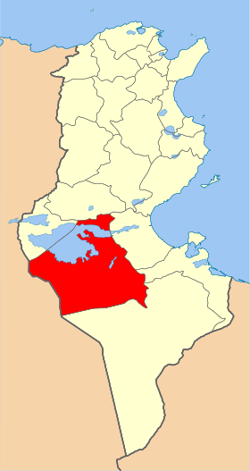
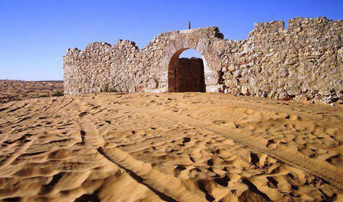
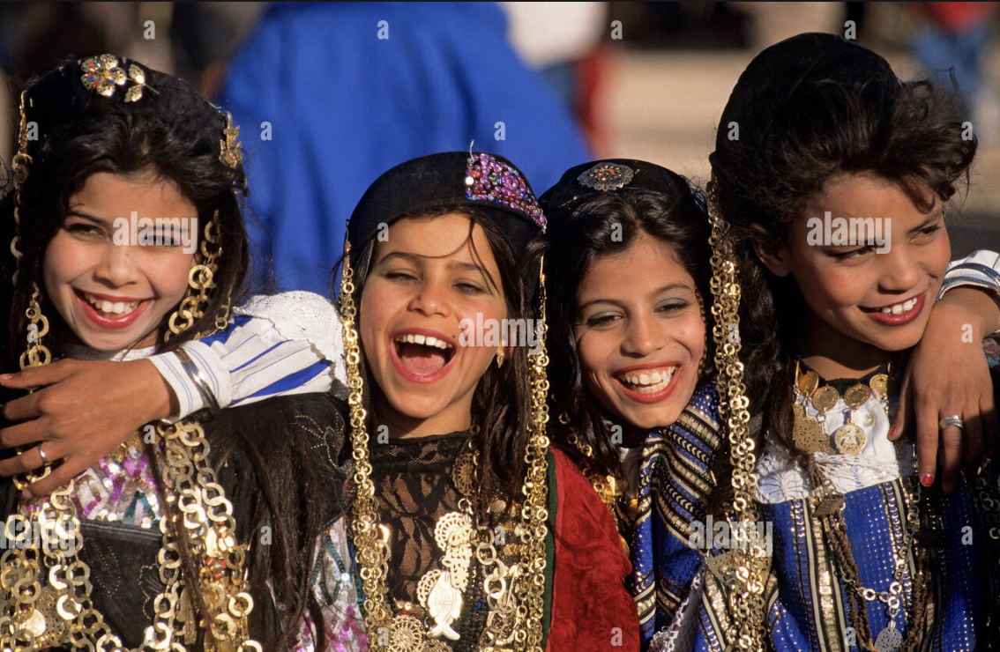
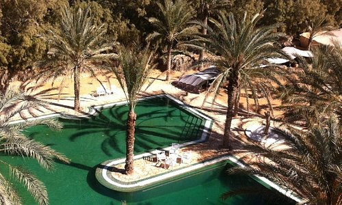
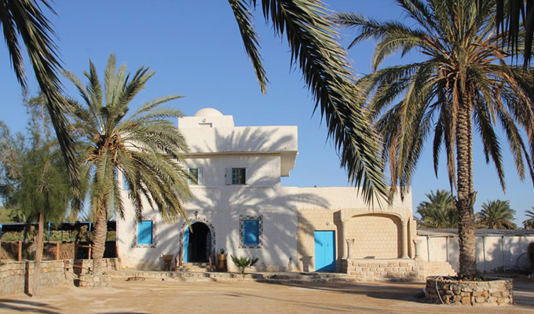

Kebili
Situé au sud-ouest de la Tunisie, au cœur d´une oasis, le gouvernorat de Kébili est limité par Gafsa au Nord, Tozeur et l´Algérie à l´Ouest, Gabès et Médenine à l´Est et Tataouine au Sud. La région constitue le trait d´union entre la dense végétation de la palmeraie et les importantes dunes à l´horizon lointain. Ces paysages naturels uniques ont permis de développer le tourisme saharien dans la région.
Parc national de Jbil
Chott el-Jérid
Ksar ghilane
Camp Abdelmoula
Quelques chiffres
Superficie
22 454 Km²
Nombre de maisons
27 500
Habitants
156 961
Localisation
Situé à plusieurs centaines de kilomètres de la capitale, le gouvernorat de Kébili est limité par le gouvernorat de Gafsa au nord, le gouvernorat de Tozeur et l'Algérie à l'ouest, le gouvernorat de Gabès et le gouvernorat de Médenine à l'est et le gouvernorat de Tataouine au sud. La température moyenne y est de 21 °C alors que la moyenne de précipitations annuelles est de 43,9 mm. Administrativement, le gouvernorat est découpé en six délégations, six municipalités, cinq conseils ruraux et 42 imadas.

Histoire
Kébili est chef-lieu de gouvernorat, la localité prend parfois des allures de caisse de résonance de l’interaction entre communautés nefzaouanes et autorités centrales ; parce que son statut administratif a engendré une diversité sociale plus grande qu’ailleurs, elle préfigure les transformations à venir dans les localités voisines, comme par exemple la défense d’un espace collectif à des fins purement spéculatives aux dépens de sa fonction initiale : un espace de vie communautaire. Car l’entrée en scène de nouvelles populations engendre de nouvelles solidarités qui contribuent peu à peu à l’effacement du rôle de la parenté dans les relations quotidiennes. Désormais, l’appartenance tribale se trouve reléguée au rang d’un instrument politique parmi d’autres, mais un instrument plus facilement mobilisable dans nos cas parce qu’il constitue un héritage local fort.

Culture

hover me hover me
hover me

hover me
hover me